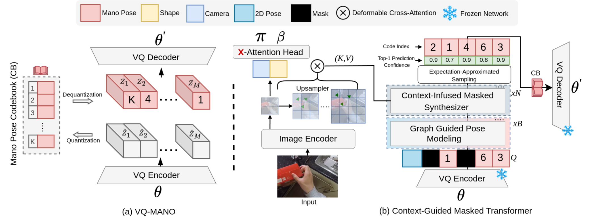

Abstract
Reconstructing a 3D hand mesh from a single RGB image is challenging due to complex articulations, self-occlusions, and depth ambiguities. Traditional discriminative methods, which learn a deterministic mapping from a 2D image to a single 3D mesh, often struggle with the inherent ambiguities in 2D-to-3D mapping. To address this challenge, we propose MMHMR, a novel generative masked model for hand mesh recovery that synthesizes plausible 3D hand meshes by learning and sampling from the probabilistic distribution of the ambiguous 2D-to-3D mapping process. MMHMR consists of two key components: VQ-MANO, which encodes 3D hand articulations as discrete pose tokens in a latent space, and Context-Guided Masked Transformer that randomly masks out pose tokens and learns their joint distribution, conditioned on corrupted token sequence, image context, and 2D pose cues. This learned distribution facilitates confidence-guided sampling during inference, producing mesh reconstructions with low uncertainty and high precision. Extensive evaluations on benchmark and real-world datasets demonstrate that MMHMR achieves state-of-the-art accuracy, robustness, and realism in 3D hand mesh reconstruction.
Video Demos
Our demo videos showcase MMHMR's ability to reconstruct highly accurate and realistic 3D hand meshes from single RGB images, overcoming challenges like complex articulations, self-occlusions, and depth ambiguities.
Method
MMHMR Training Phase . MMHMR consists of two key components: (1) VQ-MANO, which encodes 3D hand poses into a sequence of discrete tokens within a latent space, and (2) a Context-Guided Masked Transformer that models the probabilistic distributions of these tokens, conditioned on the input image, 2D pose cues, and a partially masked token sequence.
HINT Benchmark: Challenging Poses in Wild

Visualizing In-Wild Results


Mesh-Guided Control for Hand Image Generation